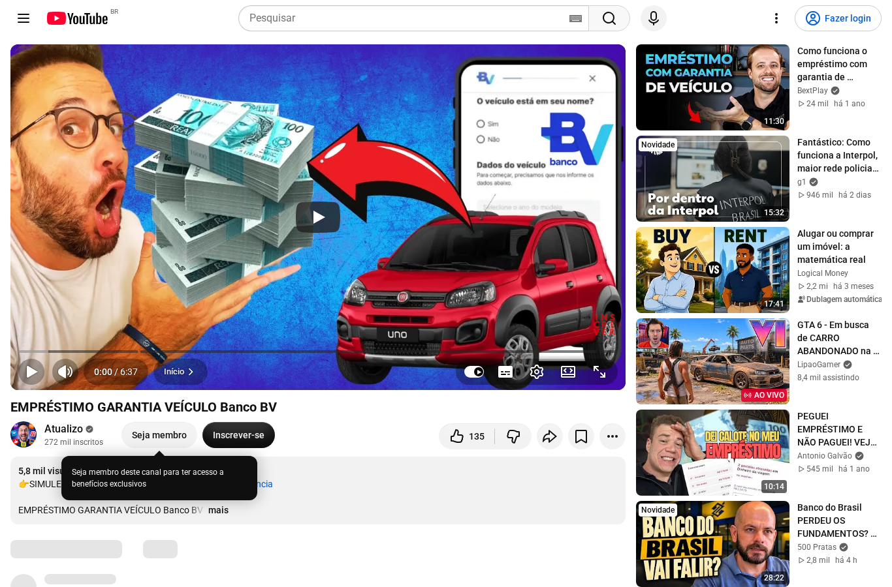
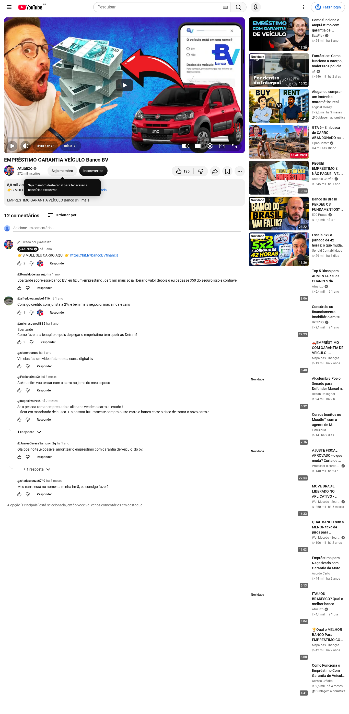

Sistema de Investigação de Marca e Identidade Online
https://www.youtube.com/watch?v=gg3FG838ah8
Prioridade: MEDIUM · Cenário: B_AMBIGUOUS_COMMUNICATION · Revisão humana: PENDING
A publicação em canal do YouTube atua na intermediação e captação de leads para crédito com garantia de veículo utilizando a marca e logotipo do Banco BV em destaque no título e na thumbnail. O canal direciona espectadores a um link encurtado ('bit.ly/bancoBVfinancia') sob o pretexto de simulação, sem informar a razão social ou CNPJ da entidade promotora e sem prestar as declarações obrigatórias de correspondente bancário previstas na Resolução CMN nº 4.935/2021. Configura comunicação ambígua com potencial de induzir o consumidor a erro quanto à oficialidade da jornada de simulação. [Revisor: CONFIRM] A publicação no YouTube do canal 'Atualizo' utiliza o logotipo e o nome do Banco BV na thumbnail e no título para promover simulação de empréstimo com garantia de veículo, redirecionando o público para captação de leads via link encurtado ('bit.ly/bancoBVfinancia'). Não há apresentação de razão social, CNPJ ou identificação clara sobre a condição de correspondente bancário ou independência em relação à instituição financeira (Res. CMN 4.935/2021). A hipótese de comunicação ambígua com necessidade de revisão (REVIEW_REQUIRED, prioridade MEDIUM) é procedente e confirmada.


| Ref | Tipo | Local | Conteúdo |
|---|---|---|---|
| E-URL | domain | url | URL final: https://www.youtube.com/watch?v=gg3FG838ah8 (domínio: www.youtube.com) |
| E-COLLECT | network | collection | Status da coleta: OK; HTTP 200; ocorrências: HTML truncated to 2000000 bytes |
| E-DISC-001 | text | search_index | Índice de busca (grounding): youtube.com — `https://www.youtube.com/watch` (*"EMPRÉSTIMO GARANTIA VEÍCULO Banco BV"* / *"Como Financiar Veículo Banco BV"*) | **Plataforma:** YouTube | **Como a marca é utilizada:** Utiliza os nomes "Banco BV" e "BV Financeira" nos títulos e capas para guiar o espectador em processos de simulação online | Trata-se de canal mantido por pessoa física / promotor digital, sem disponibilizar razão social, CNPJ de empresa intermediadora ou aviso regulatório de que não se trata de canal oficial do banco | **Captação Oculta de Leads via Links Encurtados:** Identificou-se o uso recorrente de links do tipo `bit.ly` sob alegação de "simulador oficial", sem apresentação da pessoa jurídica responsável pelo redirecionamento ou pelo tratamento dos dados pessoais e financeiros (em potencial desacordo com as diretrizes do Banco Central e da LGPD) |
| E-SHOT-VIEWPORT | screenshot | viewport | evidence/Cd7459722d4/attempt-1/viewport.png (sha256 ac6c991f313687a9…) |
| E-SHOT-FULL | screenshot | page | evidence/Cd7459722d4/attempt-1/fullpage.png (sha256 00d25385da1eb855…) |
| E-TITLE | title | head | EMPRÉSTIMO GARANTIA VEÍCULO Banco BV - YouTube |
| E-META-1 | meta | head | description: 👉SIMULE SEU CARRO AQUI 👉 https://bit.ly/bancoBVfinanciaEMPRÉSTIMO GARANTIA VEÍCULO Banco BVQuer saber como funciona o empréstimo com garantia de veículo do... |
| E-META-2 | meta | head | og:site_name: YouTube |
| E-META-3 | meta | head | og:title: EMPRÉSTIMO GARANTIA VEÍCULO Banco BV |
| E-META-4 | meta | head | og:description: 👉SIMULE SEU CARRO AQUI 👉 https://bit.ly/bancoBVfinanciaEMPRÉSTIMO GARANTIA VEÍCULO Banco BVQuer saber como funciona o empréstimo com garantia de veículo do... |
| E-CANONICAL | meta | head | https://www.youtube.com/watch?v=gg3FG838ah8 |
| E-HEAD-1 | heading | page | EMPRÉSTIMO GARANTIA VEÍCULO Banco BV |
| E-HEAD-2 | heading | page | Comentários |
| E-HEAD-3 | heading | page | Como funciona o empréstimo com garantia de veículo? |
| E-HEAD-4 | heading | page | Fantástico: Como funciona a Interpol, maior rede policial do mundo comandada por brasileiro |
| E-HEAD-5 | heading | page | Alugar ou comprar um imóvel: a matemática real |
| E-HEAD-6 | heading | page | GTA 6 - Em busca de CARRO ABANDONADO na cidade! |
| E-HEAD-7 | heading | page | PEGUEI EMPRÉSTIMO E NÃO PAGUEI! VEJA O QUE PODE ACONTECER SE EU DER CALOTE NO BANCO |
| E-HEAD-8 | heading | page | Banco do Brasil PERDEU OS FUNDAMENTOS? Veja o que os números revelam |
| E-HEAD-9 | heading | page | Escala 5x2 e jornada de 42 horas: o que muda na sua empresa até 16/12 |
| E-HEAD-10 | heading | page | Top 5 Dicas para AUMENTAR suas CHANCES de Aprovação de Financiamento de Veículo! |
| E-HEAD-11 | heading | page | Consórcio ou financiamento imobiliário em 2025 - Qual a melhor opção? |
| E-HEAD-12 | heading | page | 🛻EMPRÉSTIMO COM GARANTIA DE VEÍCULO: Vantagens e Desvantagens | Não Contrate Antes de Conferir! |
| E-HEAD-13 | heading | page | Alcolumbre Põe o Senado para Defender Marcel no STF! |
| E-HEAD-14 | heading | page | Cursos bonitos no Moodle™ com o agente de IA |
| E-HEAD-15 | heading | page | AJUSTE FISCAL APROVADO - o que muda? Corte de gastos? Benefícios fiscais? Entenda o pacote fiscal! |
| E-HDR | text | header | BR Pular navegação Fazer login |
| E-FOLD | text | viewport (acima da dobra) | BR Fazer login 0:00 / 6:37 Início EMPRÉSTIMO GARANTIA VEÍCULO Banco BV Atualizo 272 mil inscritos Seja membro Inscrever-se 135 5,8 mil visualizações há 1 ano #Atualizo 👉SIMULE SEU CARRO AQUI 👉 https://bit.ly/bancoBVfinancia EMPRÉSTIMO GARANTIA VEÍCULO Banco BV mais Comentários 11:30 Como funciona o empréstimo com garantia de veículo? BextPlay 24 mil há 1 ano 15:32 Novidade Fantástico: Como funciona a Interpol, maior rede policial do mundo comandada por brasileiro g1 946 mil há 2 dias 17:41 Alugar ou comprar um imóvel: a matemática real Logical Money 2,2 mi há 3 meses Dublagem automática AO VIVO GTA 6 - Em busca de CARRO ABANDONADO na cidade! LipaoGamer 8,4 mil assistindo 10:14 PEGUEI EMPRÉSTIMO E NÃO PAGUEI! VEJA O QUE PODE ACONTECER SE EU DER CALOTE NO BANCO Antonio Galvão 545 mil há 1 ano 28:22 Novidade Banco do Brasil PERDEU OS FUNDAMENTOS? Veja o que os números revelam 500 Pratas 2,8 mil há 4 h Seja membro deste canal para ter acesso a benefícios exclusivos |
| E-NAV | nav | header | Página inicial do YouTube <https://www.youtube.com/> | Fazer login <https://accounts.google.com/ServiceLogin?service=youtube&uilel=3&passive=true&continue=https%3A%2F%2Fwww.youtube.com%2Fsignin%3Faction_handle_signin%3Dtrue%26app%3Ddesktop%26hl%3Dpt%26next%3Dhttps%253A%252F%252Fwww.youtube.com%252Fwatch%253Fv%253Dgg3FG838ah8&hl=pt-BR&ec=65620> |
| E-CTA-1 | cta | header | Guia |
| E-CTA-2 | cta | header | Pular navegação |
| E-CTA-3 | cta | header | Search |
| E-CTA-4 | cta | header | Pesquisar com sua voz |
| E-CTA-5 | cta | header | Configurações |
| E-CTA-6 | cta | page | Reproduzir |
| E-CTA-7 | cta | page | Reproduzir (k) |
| E-CTA-8 | cta | page | Sem áudio (m) |
| E-CTA-9 | cta | page | Início |
| E-CTA-10 | cta | page | A reprodução automática está ativada |
| E-CTA-11 | cta | page | Legendas/legendas ocultas (c) |
| E-CTA-12 | cta | page | Detalhes |
| E-CTA-13 | cta | page | Modo Teatro (t) |
| E-CTA-14 | cta | page | Tela inteira (f) |
| E-CTA-15 | cta | page | Seja membro |
| E-CTA-16 | cta | page | Inscrever-se |
| E-CTA-17 | cta | page | 135 |
| E-CTA-18 | cta | page | Não gostei deste vídeo |
| E-CTA-19 | cta | page | Compartilhar |
| E-CTA-20 | cta | page | Salvar na playlist |
| E-CONTACT-1 | contact | page | / card0z0 <https://www.youtube.com/redirect?event=video_description&redir_token=QUlxb01IWmtWazhvUm9IRGcwbzA2cVRoQ0ZmY3xBQnJ0NjlsNU1FcWpKazFTcWZoS2JXd3FYRE5zczhMQWtCRlRmNFVFVGxQaFhSbWZYcGpjNUNJNHZ2Q2FkU2FsN29JMFZlVDZDaFg4R0h2TW1WZHNrQ0tBNEYxYktXUkJSS0pO&q=https%3A%2F%2Finstagram.com%2Fcard0z0&v=gg3FG838ah8> |
| E-TXT-001 | text | page | EMPRÉSTIMO GARANTIA VEÍCULO Banco BV |
| E-TXT-002 | text | page | 👉SIMULE SEU CARRO AQUI 👉 https://bit.ly/bancoBVfinancia |
| E-TXT-003 | text | page | EMPRÉSTIMO GARANTIA VEÍCULO Banco BV … |
| E-TXT-004 | text | page | PEGUEI EMPRÉSTIMO E NÃO PAGUEI! VEJA O QUE PODE ACONTECER SE EU DER CALOTE NO BANCO |
| E-TXT-005 | text | page | Banco do Brasil PERDEU OS FUNDAMENTOS? Veja o que os números revelam |
| E-TXT-006 | text | page | QUAL BANCO tem a MENOR taxa de juros para empréstimo? Pega essa dica! |
| E-TXT-007 | text | page | ITAÚ OU BRADESCO? Qual o melhor banco tradicional para ser sua conta principal! |
| E-TXT-008 | text | page | 🏆Qual o MELHOR BANCO Para EMPRÉSTIMO COM GARANTIA DE VEÍCULO 2026 |
| Dimensão | Sinal | Achado | Refs |
|---|---|---|---|
| VISUAL_IDENTITY | CONFUSION | A thumbnail do vídeo exibe mockup de smartphone com a marca e logotipo do Banco BV associado a imagens apelativas de maços de dinheiro e veículo. | E-SHOT-VIEWPORT E-SHOT-FULL |
| DECLARED_COMMERCIAL_IDENTITY | CONFUSION | O canal é denominado 'Atualizo' (criador de conteúdo/promotor digital), porém não divulga razão social, CNPJ ou dados de contato da entidade responsável pela intermediação e envio do link de simulação. | E-FOLD E-DISC-001 |
| CORRESPONDENT_TRANSPARENCY | CONFUSION | Ausência total de declaração de correspondente bancário independente, identificação da instituição representada ou canais de ouvidoria conforme exigido pelo art. 14 da Resolução CMN nº 4.935/2021. | E-FOLD E-META-1 E-DISC-001 |
| INSTITUTIONAL_LANGUAGE | NEUTRAL | O conteúdo do título e descrição adota tom apelativo e promocional voltado a simulação de crédito ('EMPRÉSTIMO GARANTIA VEÍCULO Banco BV', 'SIMULE SEU CARRO AQUI'). | E-TITLE E-META-1 E-TXT-001 |
| LOGO_USAGE | CONFUSION | Logotipo contemporâneo do Banco BV inserido na arte de capa sem indicação de parceria ou intermediação autorizada. | E-SHOT-VIEWPORT E-SHOT-FULL |
| SERVICE_JOURNEY | CONFUSION | Captação de interessados por meio de link encurtado não oficial (bit.ly/bancoBVfinancia) que promete simulação de crédito automotivo com o Banco BV. | E-META-1 E-TXT-002 E-DISC-001 |
| CONTACT_CHANNELS | NEUTRAL | Disponibilizado apenas link para perfil pessoal de Instagram na descrição (/card0z0). | E-CONTACT-1 |
| CONSUMER_CONFUSION | CONFUSION | Comentários no vídeo revelam consumidores com dúvidas diretas sobre contratação, liberação e regras do empréstimo Banco BV acreditando se tratar de atendimento/orientação direta. | E-SHOT-FULL |
A publicação em canal do YouTube atua na intermediação e captação de leads para crédito com garantia de veículo utilizando a marca e logotipo do Banco BV em destaque no título e na thumbnail. O canal direciona espectadores a um link encurtado ('bit.ly/bancoBVfinancia') sob o pretexto de simulação, sem informar a razão social ou CNPJ da entidade promotora e sem prestar as declarações obrigatórias de correspondente bancário previstas na Resolução CMN nº 4.935/2021. Configura comunicação ambígua com potencial de induzir o consumidor a erro quanto à oficialidade da jornada de simulação.
Nenhum CNPJ ou razão social identificáveis no conteúdo coletado.
| Tipo | Valor | Ref | Contexto |
|---|---|---|---|
| domain | youtube.com | E-URL | |
| social_profile | https://www.youtube.com/watch?v=gg3FG838ah8 | E-URL | |
| social_profile | https://www.youtube.com/watch` | E-DISC-001 | |
| social_profile | https://www.youtube.com/redirect?event=video_description&redir_token=QUlxb01IWmtWazhvUm9IRGcwbzA2cVRoQ0ZmY3xBQnJ0NjlsNU1FcWpKazFTcWZoS2JXd3FYRE5zczhMQWtCRlRmNFVFVGxQaFhSbWZYcGpjNUNJNHZ2Q2FkU2FsN29JMFZ | E-CONTACT-1 |
Mapeamento indicativo para apoio à auditoria. Não constitui conclusão regulatória; a decisão definitiva pertence à auditoria.
Fonte: NORMATIVE
Art. 14. O contrato de correspondente deve estabelecer: [...] II - vedação à utilização, pelo contratado, de logomarca ou de outros atributos que sejam similares aos adotados pela instituição contratante em suas agências, postos de atendimento, sítio eletrônico na internet, aplicativo ou outras plataformas de comunicação em rede;
Hipótese: Uso de logomarca, uso excessivo/desproporcional ou de atributos similares aos adotados pela contratante em seus canais. A norma disciplina correspondentes contratados; o responsável não foi identificado como correspondente.
Evidência observada: E-DISC-001 E-SHOT-FULL E-SHOT-VIEWPORT
Informação faltante:
Fonte: NORMATIVE
Art. 14. O contrato de correspondente deve estabelecer: [...] III - divulgação ao público, pelo contratado, de sua condição de prestador de serviços à instituição contratante, identificada pelo nome com que é conhecida no mercado, com descrição dos produtos e serviços oferecidos e canais de contato da instituição contratante, inclusive de sua ouvidoria, em local visível, em destaque e em formato legível, por meio de: a) sítio eletrônico do correspondente na internet, acessível na página inicial; b) aplicativo e outras plataformas de comunicação em rede do correspondente; [...]
Hipótese: Divulgação ao público da condição de prestador de serviços/parceria ausente, insuficiente, ambígua ou sem destaque. A norma disciplina correspondentes contratados; o responsável não foi identificado como correspondente.
Evidência observada: E-DISC-001 E-FOLD E-META-1 E-SHOT-FULL E-TXT-002
Informação faltante:
Fonte: NORMATIVE
Art. 3º O correspondente atua por conta e sob as diretrizes da instituição contratante, que assume inteira responsabilidade pelo atendimento prestado aos clientes e usuários por meio do contratado.
Hipótese: Atendimento ao público prestado por meio do contratado em condições que podem não seguir as diretrizes da contratante. A norma disciplina correspondentes contratados; o responsável não foi identificado como correspondente.
Evidência observada: E-DISC-001 E-META-1 E-TXT-002
Informação faltante:
Se o responsável não for correspondente contratado, os indícios podem caracterizar uso indevido de marca ou fraude, fora do escopo da Res. 4.935: avaliar encaminhamento às áreas jurídica/segurança.
Limitações: requisitos contratuais/internos não fornecidos: mapeamento limitado ao texto normativo
Decisão: CONFIRM → REVIEW_REQUIRED / MEDIUM
A publicação no YouTube do canal 'Atualizo' utiliza o logotipo e o nome do Banco BV na thumbnail e no título para promover simulação de empréstimo com garantia de veículo, redirecionando o público para captação de leads via link encurtado ('bit.ly/bancoBVfinancia'). Não há apresentação de razão social, CNPJ ou identificação clara sobre a condição de correspondente bancário ou independência em relação à instituição financeira (Res. CMN 4.935/2021). A hipótese de comunicação ambígua com necessidade de revisão (REVIEW_REQUIRED, prioridade MEDIUM) é procedente e confirmada.
| Tema | Severidade | Questionamento | Refs |
|---|---|---|---|
| domain_attribution | MEDIUM | Responsável pela página não identificado; a conclusão sobre a marca não pode ser atribuída a um estabelecimento específico. | E-URL |
| Fonte | Consulta / hipótese | URL original | Título / trecho |
|---|---|---|---|
| grounding | Objetivo: Vídeos e canais (YouTube, Kwai, Threads) de lojas e promotoras usando a marca.
Execute no Google Search as seguintes consultas (dorks):
- site:youtube.com ("Banco BV" OR "bv financeira") (financiamento OR feirão OR loja OR consignado) -site:bv.com.br -site:bancobv.com.br -site:bvfinanceira.com.br -site:bvinvestimentos.com.br -site:napista.com.br -site:bvopen.com.br -site:meufinanciamentosolar.com.br -site:votorantim.com.br -site:vam.com.br
- site:kwai.com ("Banco BV" OR "bv financeira" OR "Feirão BV") -site:bv.com.br -site:bancobv.com.br -site:bvfinanceira.com.br -site:bvinvestimentos.com.br -site:napista.com.br -site:bvopen.com.br -site:meufinanciamentosolar.com.br -site:votorantim.com.br -site:vam.com.br
- site:threads.net ("Banco BV" OR "bv financeira") (financiamento OR feirão OR crédito) -site:bv.com.br -site:bancobv.com.br -site:bvfinanceira.com.br -site:bvinvestimentos.com.br -site:napista.com.br -site:bvopen.com.br -site:meufinanciamentosolar.com.br -site:votorantim.com.br -site:vam.com.br
Liste de forma abrangente as páginas públicas encontradas (até 12 resultados distintos), informando para cada uma o nome do estabelecimento/perfil, a URL e como a marca é utilizada (destaque visual, título, feirão, simulador, redes sociais e se há ou não identificação clara de CNPJ e condição de correspondente bancário). H6-platform:YouTube-Kwai-Threads | https://www.youtube.com/watch?v=gg3FG838ah8 | youtube.com `https://www.youtube.com/watch` (*"EMPRÉSTIMO GARANTIA VEÍCULO Banco BV"* / *"Como Financiar Veículo Banco BV"*) | **Plataforma:** YouTube | **Como a marca é utilizada:** Utiliza os nomes "Banco BV" e "BV Financeira" nos títulos e capas para guiar o espectador em processos de simulação online | Trata-se de canal mantido por pessoa física / promotor digital, sem disponibilizar razão social, CNPJ de empresa intermediadora ou aviso regulatório de que não se trata de canal oficial do banco | **Captação Oculta de Leads via Links Encurtados:** Identificou-se o uso recorrente de links do tipo `bit.ly` sob alegação de "simulador oficial", sem apresentação da pessoa jurídica responsável pelo redirecionamento ou pelo tratamento dos dados pessoais e financeiros (em potencial desacordo com as diretrizes do Banco Central e da LGPD) |
Original: https://www.youtube.com/watch?v=gg3FG838ah8
Final: https://www.youtube.com/watch?v=gg3FG838ah8
| Artefato | Caminho | SHA-256 | Bytes |
|---|---|---|---|
| screenshot_viewport | evidence/Cd7459722d4/attempt-1/viewport.png | ac6c991f313687a97944c08de35bf8fb3d38e7b5e77594b6067641600751a98d | 1229494 |
| screenshot_full | evidence/Cd7459722d4/attempt-1/fullpage.png | 00d25385da1eb855ea77f8e4e2d41737b6fe00d40ef8303a5d199ea8a2c73cd1 | 1498529 |
| html | evidence/Cd7459722d4/attempt-1/page.html.txt | 59d1e0e7f269e9b50f9789a960562733bf48be1da2b2a2cb2f01272033173f7a | 2000000 |
| text | evidence/Cd7459722d4/attempt-1/text.txt | 3e061e366b39ebeb96e672a4417099403a6c6579025b4159b338430025b8fbc8 | 2674 |
| page_data | evidence/Cd7459722d4/attempt-1/page.json | c40c66bfee901efb465f69d891b784098ba98821d29089ed9c08f3fdd6372eee | 28022 |
| Quando | De | Para | Nota |
|---|---|---|---|
| 2026-11-25T18:12:11+00:00 | DISCOVERED | QUEUED | prioritised (score 1.0) |
| 2026-11-25T19:30:19+00:00 | QUEUED | COLLECTING | |
| 2026-11-25T19:30:26+00:00 | COLLECTING | COLLECTED | |
| 2026-11-25T19:30:26+00:00 | COLLECTED | ANALYZING | |
| 2026-11-25T19:30:50+00:00 | ANALYZING | REVIEWING | |
| 2026-11-25T19:30:58+00:00 | REVIEWING | COMPLETED |